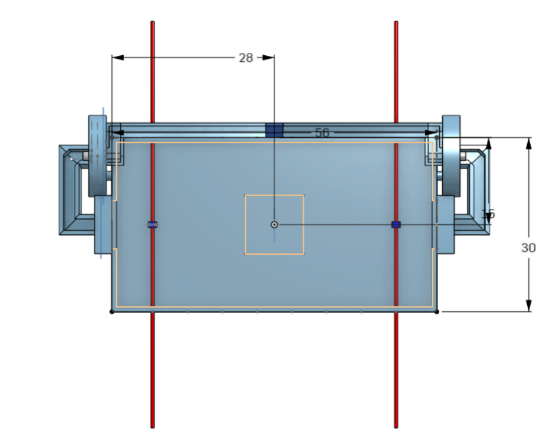
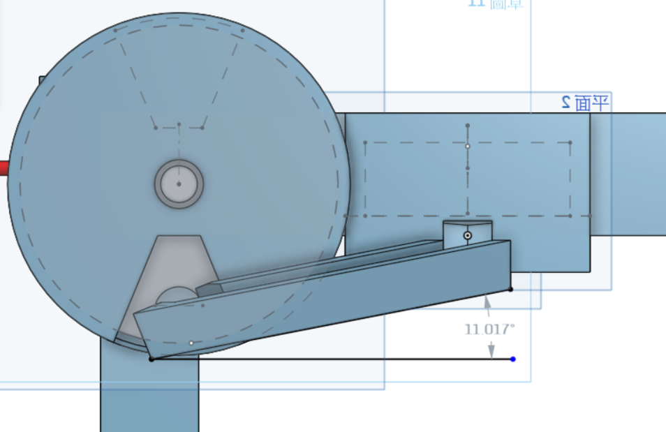

設計與繪圖 << Previous Next >> 參數設計與繪圖
設計與繪圖 << Previous Next >> 參數設計與繪圖
零組件尺寸分析
手足球系統的零組件尺寸分析 (可行性分析)
尺寸單位 : inch(吋)
1.檯桌尺寸 (長:56 寬:30 高:5)

2.橫桿插入孔尺寸(直徑:0.563 距底部:2.75 孔間距:6)
3.球門尺寸(寬:4.5 長:3 距底部:0.8 ) (初版)
球門尺寸最終版 (為了連接送球軌道與送球機構) (寬: 10)
4.橫桿尺寸(長:70 直徑:0.563)
*球桿直徑與桌檯孔洞呈鬆配合，考慮到是否會讓球員在移動時無法完整移動至左右，以及使用者好操作等因素，決定將原本的40in改成70in。

5.球員尺寸(長:1.5 寬:1 高:3 圓孔:0.563 距底部:0.9)
*球員孔洞需與衡感直徑呈緊配合，必須使球員能隨橫桿轉動。本來設定球員尺寸時，為了讓球員能順利擊球而避免卡到球的問題，所以球員與底部的距離必須小於球的直徑。
6.球尺寸(直徑:0.15)
*球的直徑要大於球員距底板的距離，才不會發生卡球等問題。

7.送球軌道
*由於尺寸需要配合送球機構以及球體尺寸的關係，軌道內側寬度設為2。

*為了讓球能順利進入送球機構，球門至最靠近送球機構軌道的彎道改為倒角。
*為了使球能不因為速度過快而彈至軌道外，而將軌道坡度減緩至10度左右。

*為了讓球能從最後的V字軌道順利進入場地，而把入口改為方形入口。

*為了讓球能順利的進入場中，方形入口前的軌道改為L型斜坡。


8.送球機構
*送球機構由圓盤和主旋轉軸組成，經由圓盤上的圓孔收入圓球，再由主傳動軸旋轉帶入至上方軌道。

*為了讓球能順利進入軌道，入球孔大小與出球孔大小有差距，進而形成小斜坡。
設計與繪圖 << Previous Next >> 參數設計與繪圖